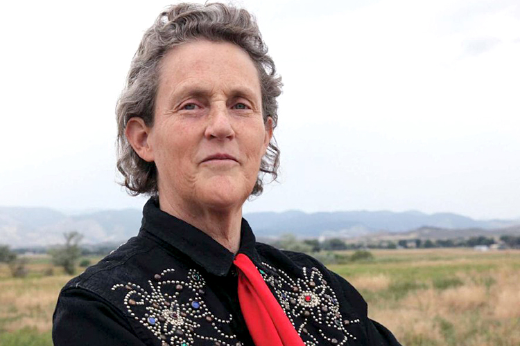

Biography
Temple Grandin was an American professor of animal science at Colorado State University. She was one of the first individuals on the autism spectrum to publicly share insights from her personal experience of autism. Grandin is a prominent and widely cited proponent for the humane treatment of livestock for slaughter.
In 1980, she published her first two scientific articles on beef cattle behavior during handling: "Livestock Behavior as Related to Handling Facilities Design." She was one of the first scientists to report that animals are sensitive to visual distractions in handling facilities such as shadows, dangling chains, and other environmental details most people do not notice.
In her academic work as a professor at Colorado State University, her graduate student Bridgett Voisinet conducted one of the early studies that showed that cattle that remained calm during handling had higher weight gains. The paper is titled "Feedlot Cattle with Calm Temperaments Have Higher Average Daily Gains Than Cattle with Excitable Temperaments," and at its time of being published which was in 1997 this was a new concept. Grandin also developed an objective numerical scoring system for assessing animal welfare at slaughter plants. The use of this scoring system resulted in significant improvements in animal stunning and handling during slaughter.
Temple advocates that her number one rule around livestock is to remain quiet and also advocates that an important livestock handling principle is to make animals’ first experiences with a new place, piece of equipment or person a favorable one. Another rule when handling livestock is to not keep animals penned alone because it is highly stressful on the animals and another one is to move animals in a walk or tot because it is important not to get them too excited. These are some of the many animal handling techniques that Temple has.